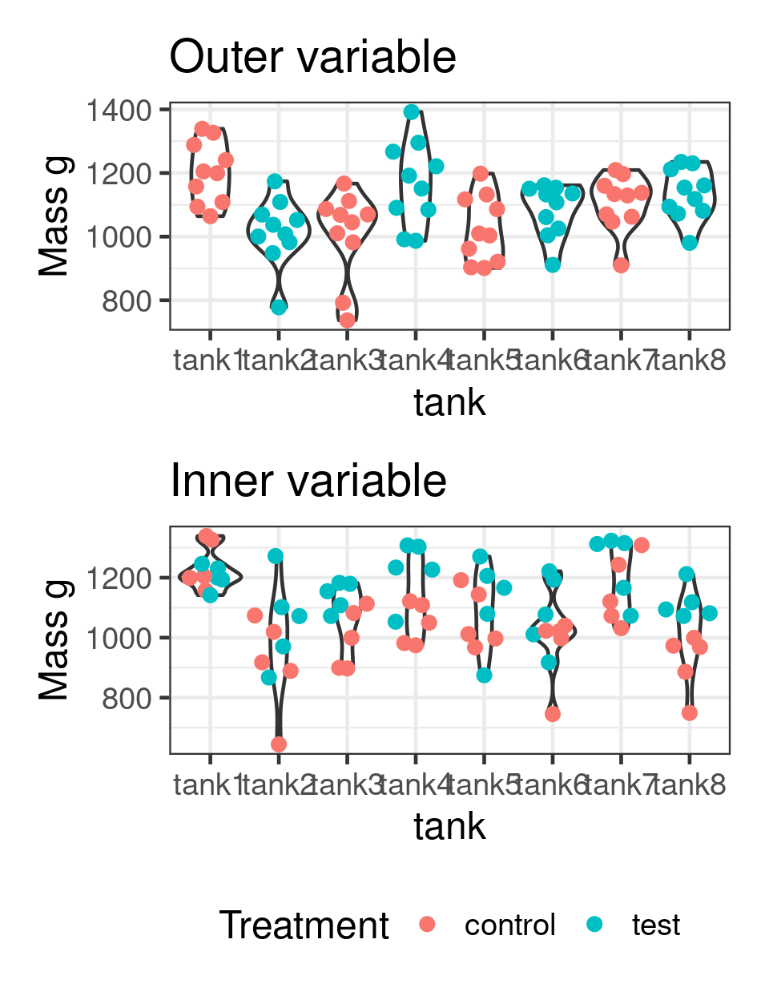

Call:
lm(formula = Mass_g ~ condition, data = demo)
Coefficients:
(Intercept) conditiontest
1147.6 -105.1
Call:
lm(formula = Mass_g ~ tank, data = demo)
Coefficients:
(Intercept) tankt2
1147.6 -105.1 Bio300B Lecture 10
Institutt for biovitenskap, UiB
22 September 2023
Observations not independent
Ignoring it causes pseudoreplication
Call:
lm(formula = Mass_g ~ condition, data = demo)
Coefficients:
(Intercept) conditiontest
1147.6 -105.1
Call:
lm(formula = Mass_g ~ tank, data = demo)
Coefficients:
(Intercept) tankt2
1147.6 -105.1
Call:
lm(formula = Mass_g ~ condition + tank, data = demo2)
Residuals:
Min 1Q Median 3Q Max
-270.11 -59.70 20.80 71.17 224.67
Coefficients: (1 not defined because of singularities)
Estimate Std. Error t value Pr(>|t|)
(Intercept) 1202.37 33.38 36.021 < 2e-16 ***
conditiontest -68.44 47.21 -1.450 0.151439
tankt2 -118.07 47.21 -2.501 0.014654 *
tankt3 -195.25 47.21 -4.136 9.44e-05 ***
tankt4 33.35 47.21 0.707 0.482102
tankt5 -178.79 47.21 -3.788 0.000313 ***
tankt6 -49.47 47.21 -1.048 0.298128
tankt7 -96.71 47.21 -2.049 0.044128 *
tankt8 NA NA NA NA
---
Signif. codes: 0 '***' 0.001 '**' 0.01 '*' 0.05 '.' 0.1 ' ' 1
Residual standard error: 105.6 on 72 degrees of freedom
Multiple R-squared: 0.3187, Adjusted R-squared: 0.2525
F-statistic: 4.812 on 7 and 72 DF, p-value: 0.0001745\[y_i = \color{red}{\beta_0} + \color{red}{\beta_1}x_i + \color{red}{\beta_2}tank_i +\color{blue}{ \epsilon_i}\]
Not interested in effect of tank
Use a Random effect
Assumes observed tanks from a population of possible tanks
\[y_{ij} = \color{red}{\beta_0} +\color{blue}{b_{0i}}+ \color{red}{\beta_1}x_i +\color{blue}{ \epsilon_{ij}}\]
Residuals from a normal distribution \(\color{blue}{ \epsilon_{ij}} \sim N(0, \sigma_{ind})\)
Random effects from a normal distribution \(\color{blue}{b_{0i}} \sim N(0, \sigma_{clu})\)
Linear mixed model fit by REML ['lmerMod']
Formula: Mass_g ~ condition + (1 | tank)
Data: demo2
REML criterion at convergence: 965.8
Scaled residuals:
Min 1Q Median 3Q Max
-2.6916 -0.5419 0.1989 0.6274 2.2428
Random effects:
Groups Name Variance Std.Dev.
tank (Intercept) 5059 71.13
Residual 11142 105.56
Number of obs: 80, groups: tank, 8
Fixed effects:
Estimate Std. Error t value
(Intercept) 1084.68 39.28 27.611
conditiontest 15.70 55.56 0.283
Correlation of Fixed Effects:
(Intr)
conditintst -0.707Linear mixed model fit by REML. t-tests use Satterthwaite's method [
lmerModLmerTest]
Formula: Mass_g ~ condition + (1 | tank)
Data: demo2
REML criterion at convergence: 965.8
Scaled residuals:
Min 1Q Median 3Q Max
-2.6916 -0.5419 0.1989 0.6274 2.2428
Random effects:
Groups Name Variance Std.Dev.
tank (Intercept) 5059 71.13
Residual 11142 105.56
Number of obs: 80, groups: tank, 8
Fixed effects:
Estimate Std. Error df t value Pr(>|t|)
(Intercept) 1084.68 39.28 6.00 27.611 1.49e-07 ***
conditiontest 15.70 55.56 6.00 0.283 0.787
---
Signif. codes: 0 '***' 0.001 '**' 0.01 '*' 0.05 '.' 0.1 ' ' 1
Correlation of Fixed Effects:
(Intr)
conditintst -0.707Linear mixed-effects model fit by REML
Data: demo2
AIC BIC logLik
973.8449 983.2717 -482.9225
Random effects:
Formula: ~1 | tank
(Intercept) Residual
StdDev: 71.12618 105.555
Fixed effects: Mass_g ~ condition
Value Std.Error DF t-value p-value
(Intercept) 1084.6791 39.28460 72 27.610796 0.000
conditiontest 15.7008 55.55682 6 0.282608 0.787
Correlation:
(Intr)
conditiontest -0.707
Standardized Within-Group Residuals:
Min Q1 Med Q3 Max
-2.6916143 -0.5418500 0.1988656 0.6273686 2.2428518
Number of Observations: 80
Number of Groups: 8 Fixed effects factors:
Random effects factors:
“one modeler’s random effect is another modeler’s fixed effect.”
“Are there enough levels of the factor in the data on which to base an estimate of the variance of the population of effects? No, means fixed effects.”

Linear mixed model fit by REML. t-tests use Satterthwaite's method [
lmerModLmerTest]
Formula: Mass_g ~ condition + (1 | tank)
Data: demo3
REML criterion at convergence: 975.8
Scaled residuals:
Min 1Q Median 3Q Max
-2.72095 -0.58452 0.09483 0.55007 1.95600
Random effects:
Groups Name Variance Std.Dev.
tank (Intercept) 6371 79.82
Residual 12253 110.69
Number of obs: 80, groups: tank, 8
Fixed effects:
Estimate Std. Error df t value Pr(>|t|)
(Intercept) 1037.398 33.207 9.416 31.240 7.87e-11 ***
conditiontest 110.263 24.752 71.000 4.455 3.06e-05 ***
---
Signif. codes: 0 '***' 0.001 '**' 0.01 '*' 0.05 '.' 0.1 ' ' 1
Correlation of Fixed Effects:
(Intr)
conditintst -0.373Linear mixed model fit by REML. t-tests use Satterthwaite's method [
lmerModLmerTest]
Formula: Reaction ~ Days + (1 | Subject)
Data: sleepstudy
Subset: Days >= 2
REML criterion at convergence: 1430
Scaled residuals:
Min 1Q Median 3Q Max
-3.6261 -0.4450 0.0474 0.5199 4.1378
Random effects:
Groups Name Variance Std.Dev.
Subject (Intercept) 1746.9 41.80
Residual 913.1 30.22
Number of obs: 144, groups: Subject, 18
Fixed effects:
Estimate Std. Error df t value Pr(>|t|)
(Intercept) 245.097 11.829 30.617 20.72 <2e-16 ***
Days 11.435 1.099 125.000 10.40 <2e-16 ***
---
Signif. codes: 0 '***' 0.001 '**' 0.01 '*' 0.05 '.' 0.1 ' ' 1
Correlation of Fixed Effects:
(Intr)
Days -0.511Linear mixed model fit by REML. t-tests use Satterthwaite's method [
lmerModLmerTest]
Formula: Reaction ~ Days + (Days | Subject)
Data: sleepstudy
Subset: Days >= 2
REML criterion at convergence: 1404.1
Scaled residuals:
Min 1Q Median 3Q Max
-4.0157 -0.3541 0.0069 0.4681 5.0732
Random effects:
Groups Name Variance Std.Dev. Corr
Subject (Intercept) 992.69 31.507
Days 45.77 6.766 -0.25
Residual 651.59 25.526
Number of obs: 144, groups: Subject, 18
Fixed effects:
Estimate Std. Error df t value Pr(>|t|)
(Intercept) 245.097 9.260 16.999 26.468 2.95e-15 ***
Days 11.435 1.845 17.001 6.197 9.74e-06 ***
---
Signif. codes: 0 '***' 0.001 '**' 0.01 '*' 0.05 '.' 0.1 ' ' 1
Correlation of Fixed Effects:
(Intr)
Days -0.454Data: sleepstudy
Subset: Days >= 2
Models:
fm1: Reaction ~ Days + (1 | Subject)
fm2: Reaction ~ Days + (Days | Subject)
npar AIC BIC logLik deviance Chisq Df Pr(>Chisq)
fm1 4 1446.5 1458.4 -719.25 1438.5
fm2 6 1425.2 1443.0 -706.58 1413.2 25.332 2 3.156e-06 ***
---
Signif. codes: 0 '***' 0.001 '**' 0.01 '*' 0.05 '.' 0.1 ' ' 1See ?plot.merMod
Two random effects
Eggs from birds nests (first random effect - lay_nest) moved to other nests (second random effect - hatch_nest)
Hierarchical random effects
Generalised linear mixed effect models
Fit with glmer()
Autocorrelated data
nlme::lme()Mixed effect models can be hard to fit
Bayesian model can help
Different statistical philosophy
Use prior information (or uninformative priors)
Bolker B (2021) GLMM FAQ
Harrison et al (2018) A brief introduction to mixed effects modelling and multi-model inference in ecology